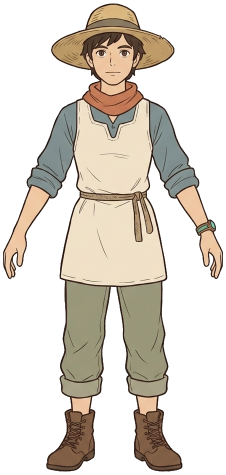
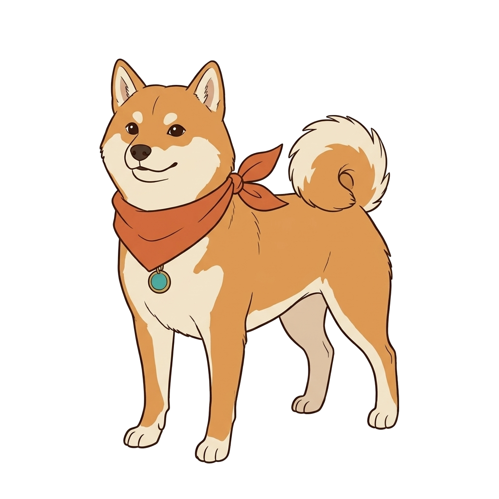
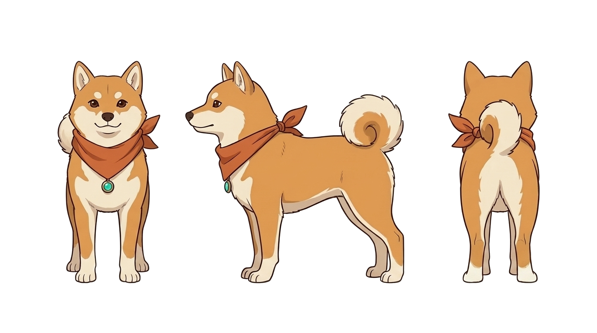
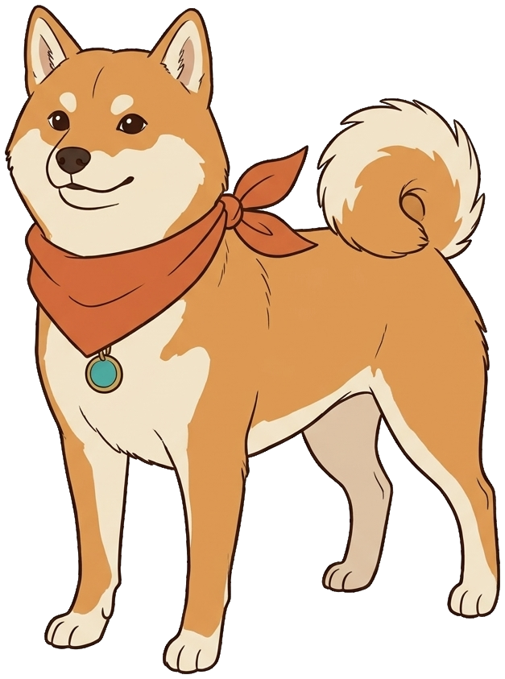
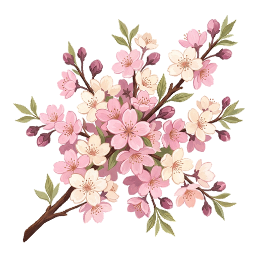
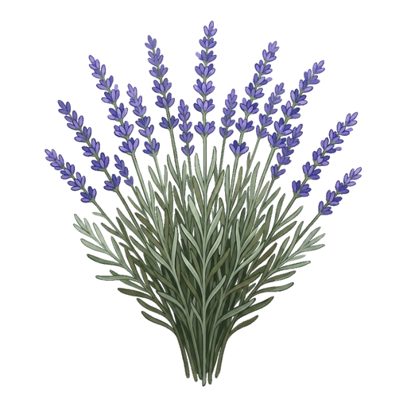

1.70 m · 主角正面 A-Pose

本页汇总 Batch-0 角色与伙伴的纯净白底（#FFFFFF）无影 A-Pose / 三视图参考包（可直接喂给 Tripo / Meshy / Hunyuan3D 等 Image-to-3D 工具），以及建筑 2×2 PBR Trim Sheet 与边缘去晕植物 Alpha 卡片。生成后的 .glb 可经仓库内的 blender_src/ingest_route_b_glb.py 一键归一化并无缝接入 Godot Asset Zoo。








